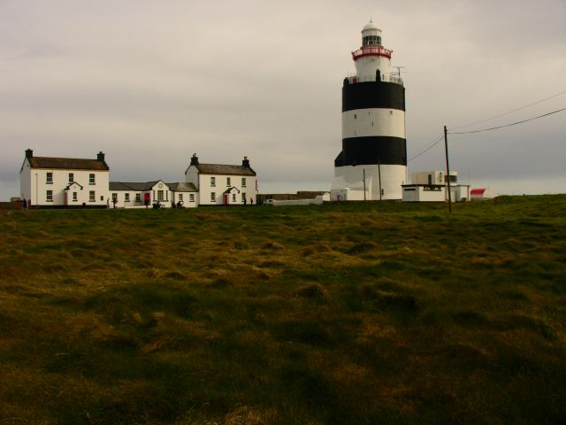
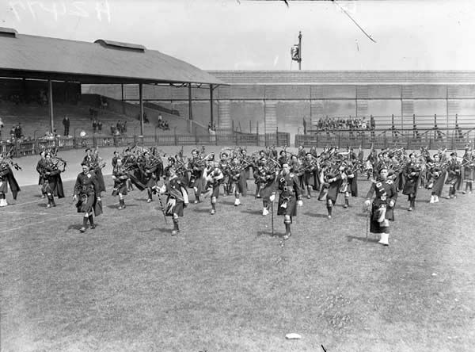

Hook Lighthouse to budynek położony na Hook Head na końcu półwyspu Hook w hrabstwie Wexford w Irlandii. Jest to druga najstarsza latarnia morska na świecie,
po wieży Herkulesa w Hiszpanii. Hook Lighthouse liczy ponad 800 lat. Posiada 35 metrów wysokości.

Tailteann Games to irlandzkie zawody sportowe rozgrywane od czasów starożytnych w miejscowości Teltown w hrabstwie Meath. W miejscowości Teltown, znajdują się wały ziemne datowane na epokę żelaza,
w okolicach których rozgrywano igrzyska do czasów średniowiecznych.

Szacuje się, że nawet 1/4 wszystkich obcokrajowców zamieszkujących Irlandię to Polacy. Jest to bardzo prawdopodobne,
bo Irlandia stała się popularnym kierunkiem po wstąpieniu przez Polskę do UE. Emigracje te miały podłoże zarobkowe. Według danych statystycznych w Irlandii mieszka około 150 tysięcy Polaków.